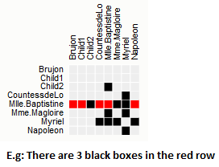
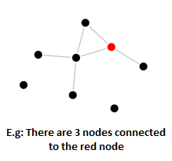

Introduction
In this experiment, we will show you a visual representation of graph/network data and ask you
to answer questions about this data. The graph visualization will be on the left-hand side and the question and other instructions will be on the right-hand side.
There is a countdown for each question, and we will hide the visualization once the time is up. You will have to provide an answer for each question before continuing. You will be provided with your turk-code after you finish the study.
Try and answer correctly as fast as possible.
You will be shown one of the following visual representations of graph data.
1. A Matrix : Question will be "How many black boxes are on the row highlighted red?" and you will enter the answer in an input box

2. Graph : Question will be "How many nodes are directly connected to the red node?" and you will enter the answer in an input box
